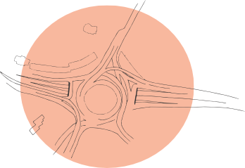

გმირთა მოედანი
„იარე ფეხით“ გიწვევს არტპროექტში „უარე ქალაქს“ მონაწილეობის მისაღებად! გახდი ერთ-ერთი 5 გამარჯვებული არტისტიდან და განათავსე შენი ინსტალაცია თბილისის საზოგადოებრივ სივრცეში.
ჩვენ ვეძებთ ადამიანებს, რომლებიც შეძლებენ არსებული სივრცეების გარდაქმნას, მოქალაქეების დაინტერესებას და ქალაქის საჭიროებების ხელოვნების საშუალებით გამოკვეთას. პროექტის მიზანია გავუღვივოთ მოქალაქეებს სურვილი, თავად მოუარონ ქალაქს!
მდებარეობა: გმირთა მოედანი, ცირკის შენობის კიბეების მიმდებარე ტერიტორია
განაცხადების მიღების ბოლო ვადაა: ოთხშაბათი, 4 მარტი, 2015, 00:00ნახაზი და რუკა

სხვა მდებარეობები
- მარჯვენა სანაპირო, ნიკოლოზ ბარათაშვილის ხიდის მიმდებარე ფერდობი
- გმირთა მოედანი, ცირკის შენობის კიბეების მიმდებარე ტერიტორია
- მარცხენა სანაპირო, ვახუშტის ხიდის მიმდებარე ფერდობი (დიდუბის მხარე)
- რუსთაველი, რუსთაველის გამზირისა და ელბაქიძის დაღმართის კვეთა
- საბურთალო, პეკინის გამზირისა და ვაჟა-ფშაველას გამზირის კვეთა